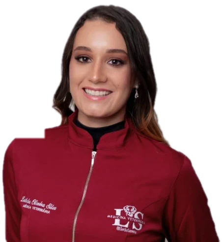
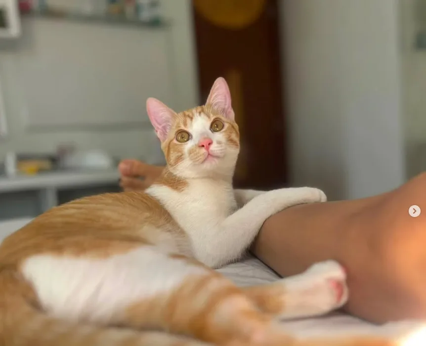
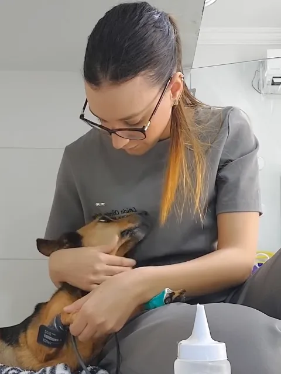
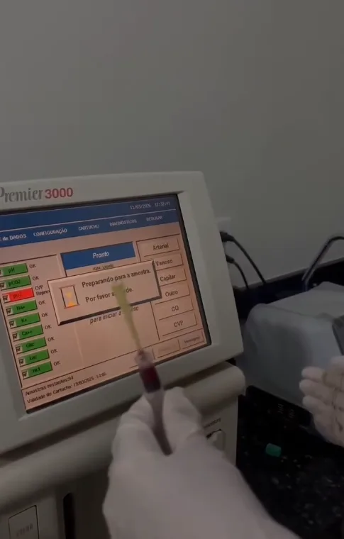
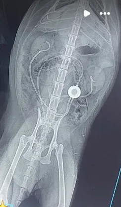
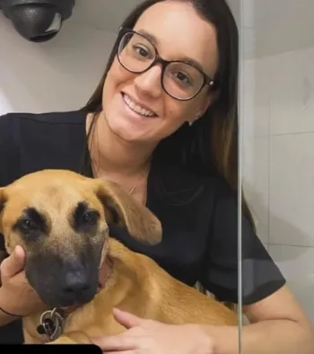

Seu pet cuidado em casa por uma médica veterinária.
Por uma médica veterinária que sabe reconhecer quando algo não vai bem.

Carinho de pet sitter. Responsabilidade de veterinária.
Deixar o seu pet com alguém é um ato de confiança. Por isso, quem vai à sua casa não é só uma pessoa que gosta de animais. É uma médica veterinária.
Eu sigo a rotina dele, dou a medicação no horário certo, observo como ele come, bebe e se comporta, e percebo os sinais que costumam passar despercebidos. Para mim, amar os animais vai muito além do carinho: é estudar, observar e cuidar com responsabilidade.
No conforto do lar
Sem transporte, sem gaiola, sem estresse. O pet fica no lugar que ele conhece.
Olhar clínico em cada visita
Temperatura, hidratação, apetite e comportamento observados com atenção.
Você sempre informado
Fotos e notícias a cada visita, para você ficar tranquilo de onde estiver.
Cuidado para cada momento do seu pet.
Escolha a situação mais parecida com a sua e me chame. A gente combina tudo pela rotina dele.
Vai viajar?
Visitas diárias com alimentação, água fresca, limpeza, brincadeiras e passeio.
Quero esse cuidado 02Pet que toma remédio
Medicação no horário, inclusive para idosos e crônicos, como diabéticos.
Quero esse cuidado 03Hospedagem para gatos
Um lar tranquilo e uma adaptação no ritmo dele.
Quero esse cuidado 04Adaptação entre gatos
Orientação passo a passo para apresentar um novo gato, presencial ou à distância.
Quero esse cuidado 05Avaliação e acompanhamento em casa
Exame físico, aferição de pressão e orientação sobre vacinas.
Quero esse cuidado 06Pós-operatório em casa
Curativos, colar, medicação e monitoramento na recuperação.
Quero esse cuidadoAtendo cães e gatos na região do Setor Novo Horizonte, Vila Boa e arredores.
Consultar minha região
Cada gatinho tem o seu tempo.
Gatos sentem a mudança de rotina mais do que a gente imagina. Por isso, eu não forço contato: deixo que ele me conheça, explore e ganhe confiança. Pequenos avanços fazem toda a diferença.
“No começo, é normal sentir medo, se esconder e estranhar os cheiros e a rotina. O mais importante é ir com calma, permitindo que ele explore tudo no seu próprio ritmo.”
16 anos de amor
Prazer, sou a Leticia.
Por 16 anos, a Juju foi a minha companheira. Foi com ela que eu aprendi o que é amor, cuidado e lealdade, e foi por ela que eu escolhi a Medicina Veterinária.
Na faculdade, eu quis viver tudo: fiz estágio em hospitais 24 horas, acompanhei plantões de madrugada, internações, cirurgias e exames de pacientes graves. Fui monitora de Clínica Médica e presidi o Grupo de Estudos de Pequenos Animais da PUC Goiás.
Hoje, como médica veterinária, levo essa experiência para dentro da sua casa. Cuido do seu pet com a atenção que eu gostaria que tivessem com a minha Juju: com amor, ciência e responsabilidade.
Experiência vivida onde o cuidado é mais exigente.
Vivência em Hospital Veterinário Leão · Hospital Veterinário Fênix · PetVip · São Francisco · Hospital do Gato




Sinais que merecem atenção.
Muitas doenças começam em silêncio. Perceber cedo faz toda a diferença na qualidade de vida do seu pet.
Notou algo assim? Fale comigo- Água
Bebe muita água e faz muito xixi
Pode indicar diabetes ou alterações hormonais.
- Peso
Emagrece mesmo comendo bem
Merece atenção e uma avaliação.
- Febre
Temperatura acima do normal
Acima de 39,2 °C em cães e 39,3 °C em gatos.
- Vacinas
Vacinas atrasadas
Risco de cinomose, parvovirose e panleucopenia.
Conteúdo informativo. Não substitui a avaliação de um médico veterinário.
Confiança que vem de quem conhece o meu trabalho.
“Com uma ajuda profissional, ficou tudo mais fácil. Hoje a Bella não fica sem a Luna e vice-versa.”
“Profissional excelente. Indico e confio muito. Competência e ética.”
“Você é fora da curva.”
Simples do primeiro contato à primeira visita.
Você me chama
Pelo WhatsApp, contando um pouco sobre o seu pet.
A gente conversa
Sobre a rotina, a alimentação e a saúde dele.
Visita de apresentação
Para ele me conhecer e combinarmos todos os detalhes.
Cuidado com notícias
Você recebe fotos e mensagens a cada visita.
Perguntas frequentes.
Você é veterinária mesmo?
Sim. Sou médica veterinária formada pela PUC Goiás, com registro ativo no CRMV-GO nº ____.
Atende gatos que não gostam de estranhos?
Sim, no ritmo deles. Eu não forço contato: deixo que o gato me conheça aos poucos, até se sentir seguro.
Pode dar medicação e insulina?
Sim. Dou a medicação no horário prescrito, inclusive para pets idosos e crônicos, como os diabéticos.
Que regiões você atende?
Atendo na região do Setor Novo Horizonte, Vila Boa e arredores, em Goiânia. Me chame no WhatsApp para confirmar o seu bairro.
E se meu pet passar mal durante a viagem?
Eu reconheço os sinais, falo com você na hora e oriento ou encaminho ao atendimento adequado.
Como recebo notícias?
Por fotos e mensagens a cada visita, pelo WhatsApp.
Viaje tranquilo. Seu pet fica em casa, com quem entende de cuidado.
Me conte sobre o seu pet e a rotina dele. Respondo pelo WhatsApp para combinarmos tudo.
Falar com a Leticia no WhatsApp